Activation rate
Share of new salons completing setup and creating their first booking.
I led the redesign of Salão99, a business management platform in the BelezaPRO ecosystem, bringing scheduling, business information, and customer relationships into a more connected experience.
Improvement in retention
Following the onboarding redesign.
Understand the salon ecosystem and align the product vision.
Combine interviews, surveys, support feedback, and product data.
Connect user pain points to opportunities and design constraints.
Bring the vision into desktop, mobile, and onboarding experiences.
Salon owners used separate tools for business management, client communication, learning, and purchasing. The goal was to connect those needs within the salon ecosystem.
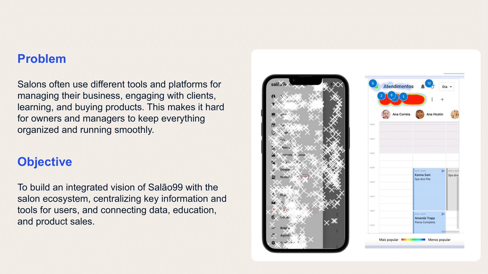
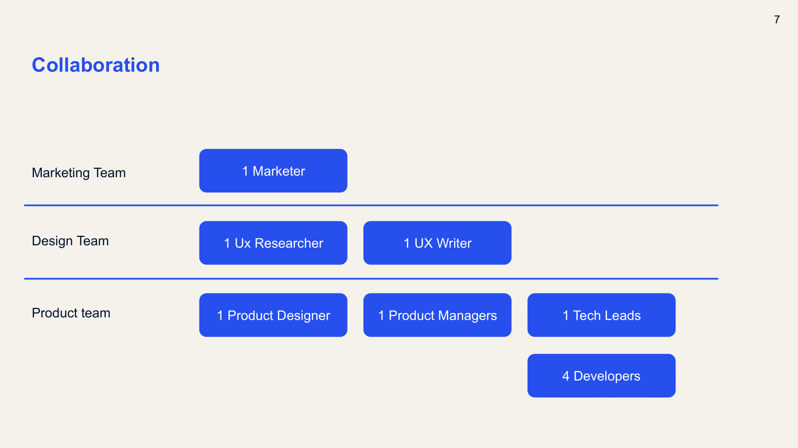
Research combined 20 user interviews, 125 survey responses, support feedback, and product analytics. The findings highlighted feature discoverability, delays in first bookings, and difficulty tracking financial reports and stock.
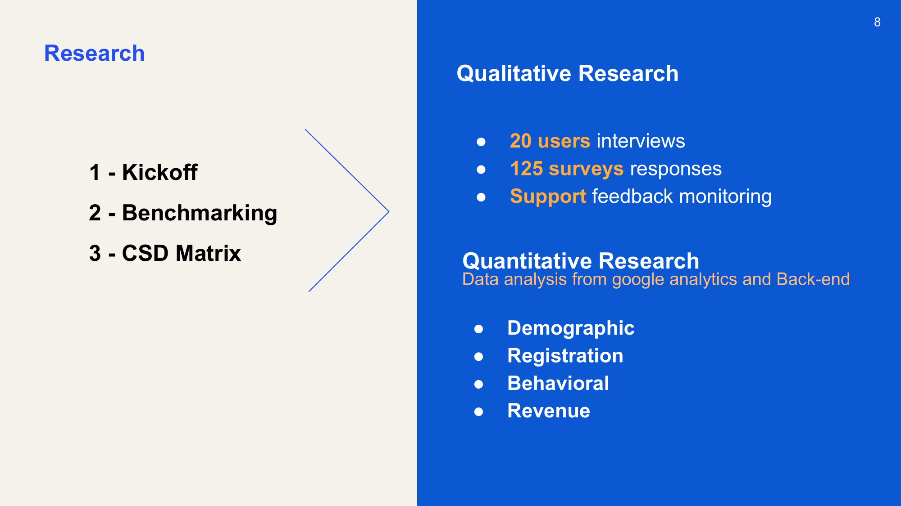
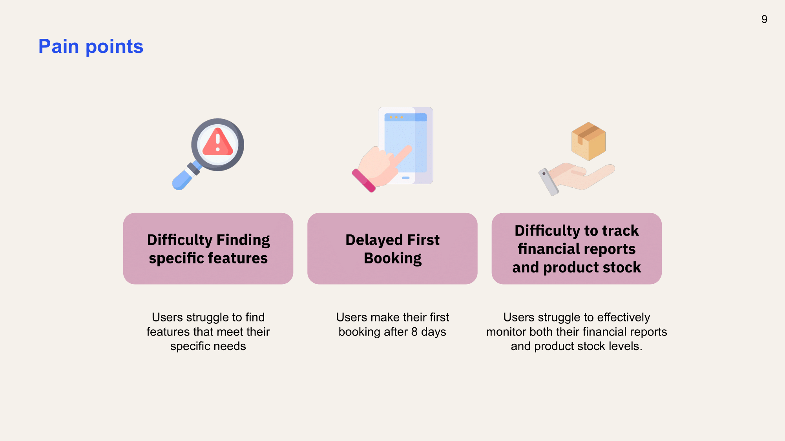
The opportunity solution tree connected the findings to onboarding and dashboard improvements. The design also needed to account for drop-off during registration and the dashboard’s ability to support a growing product.
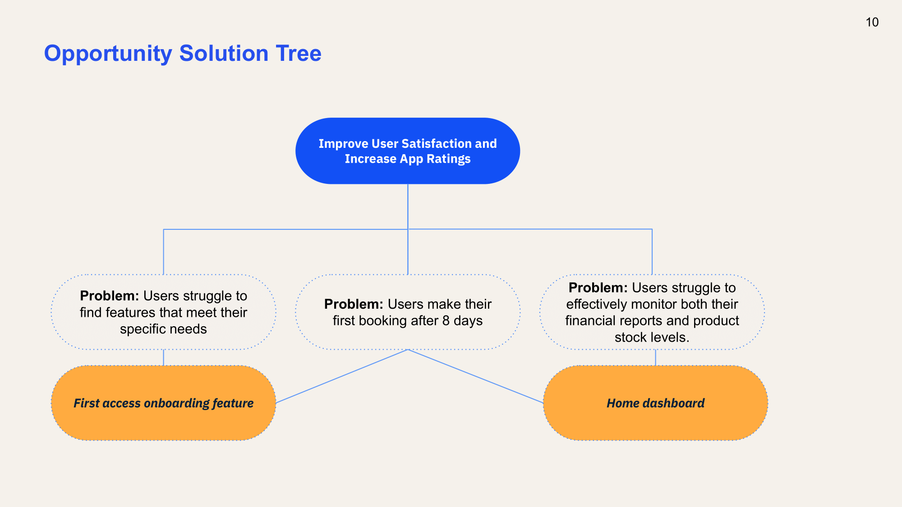
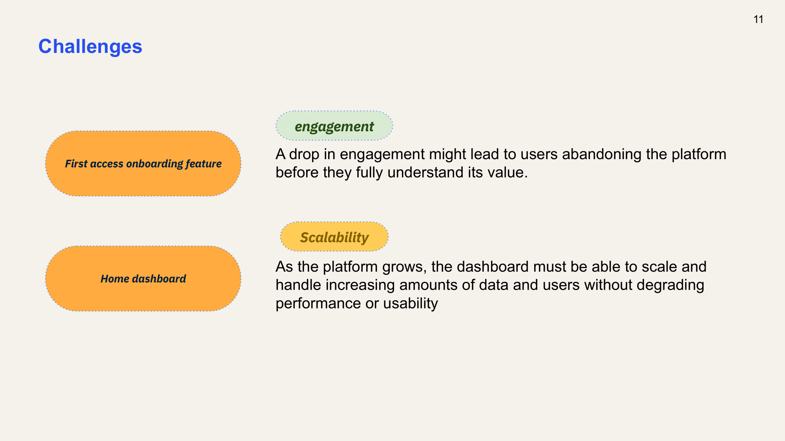
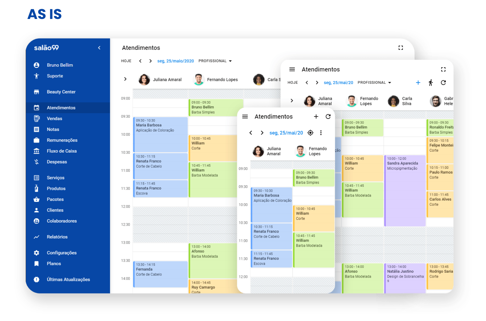
The redesigned direction brings scheduling together with business information, education, and product discovery across desktop and mobile.
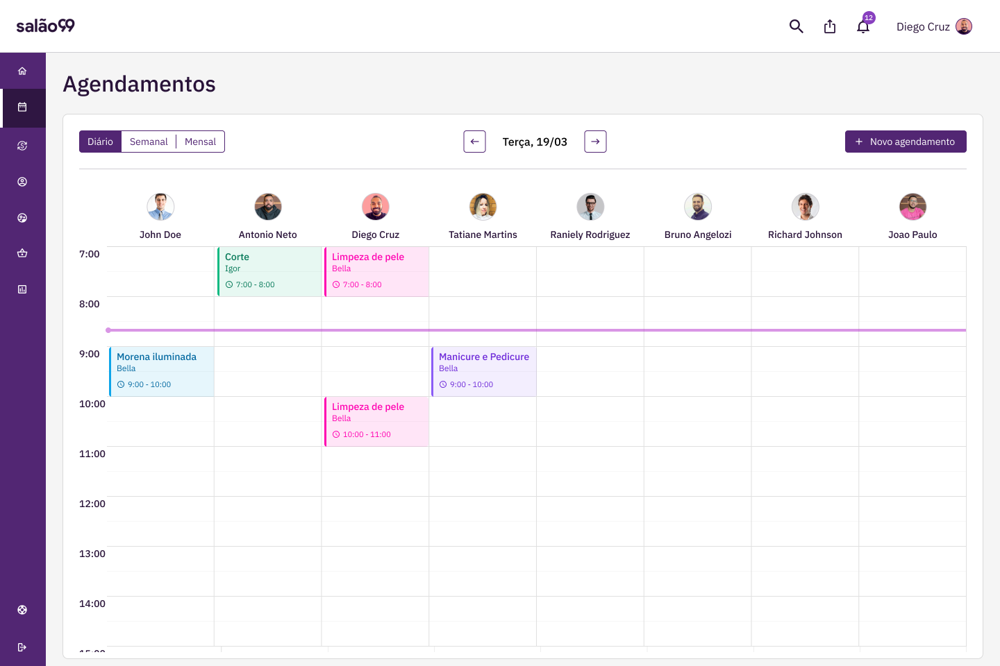
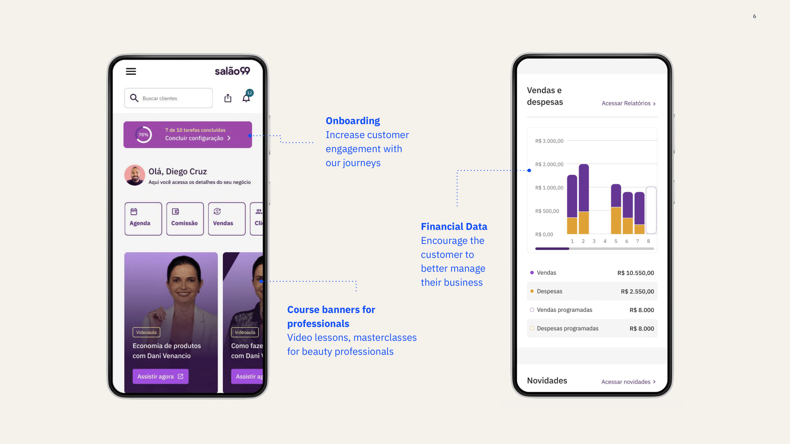
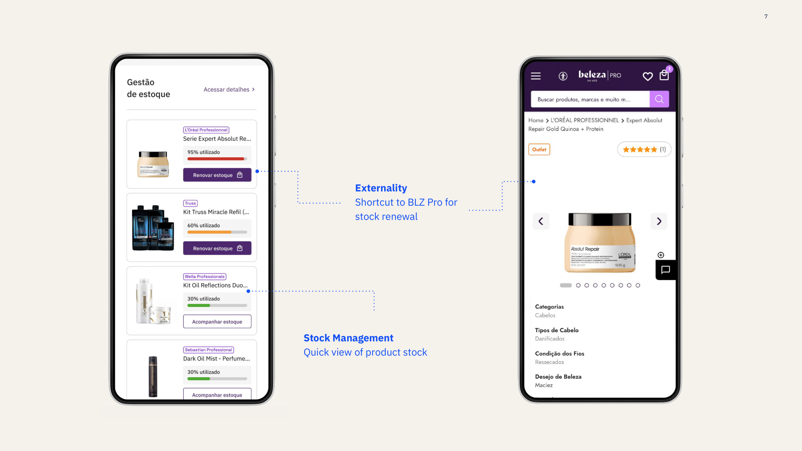
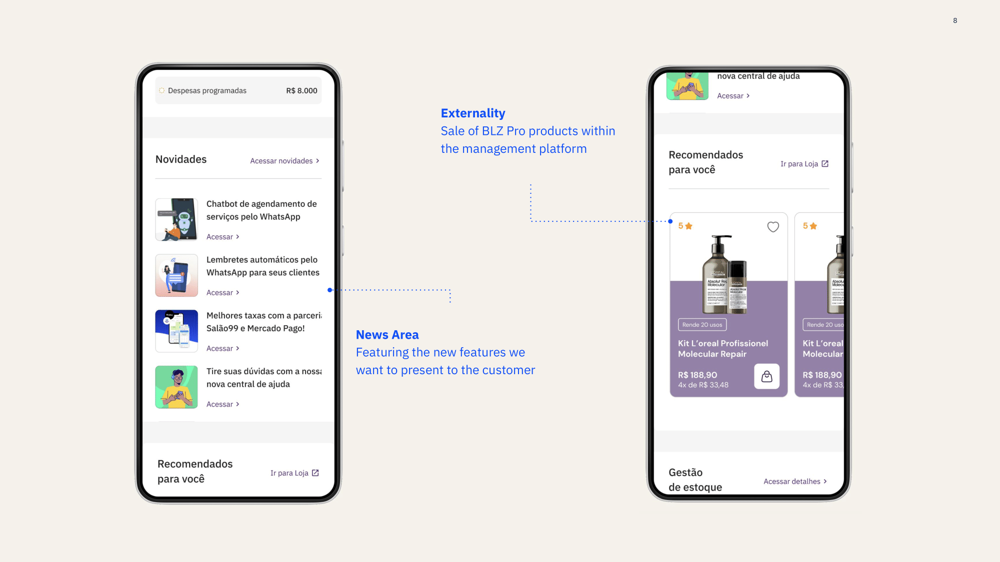
I rebuilt the onboarding experience as part of the redesign. This work improved retention by 20%.
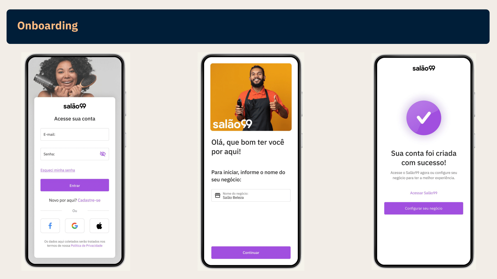
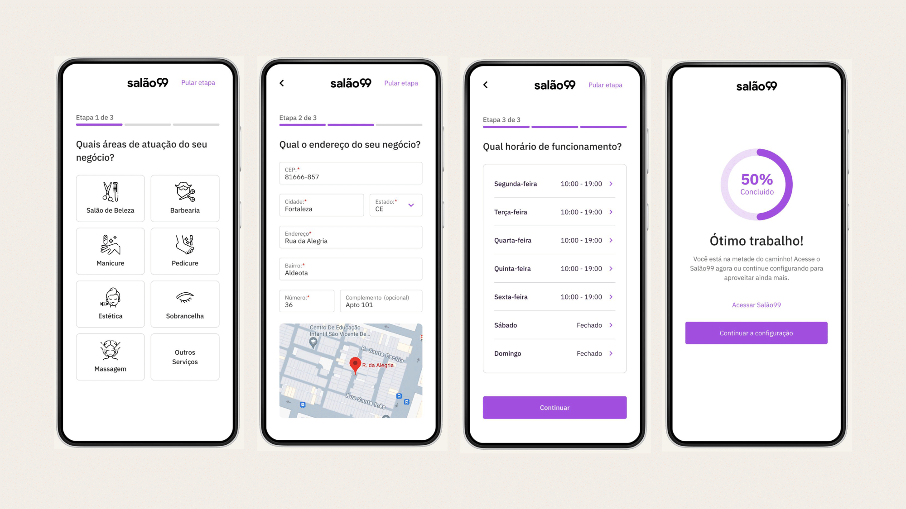
Usability testing informed the redesign. The evaluation below brings together the experience measures documented in the project.
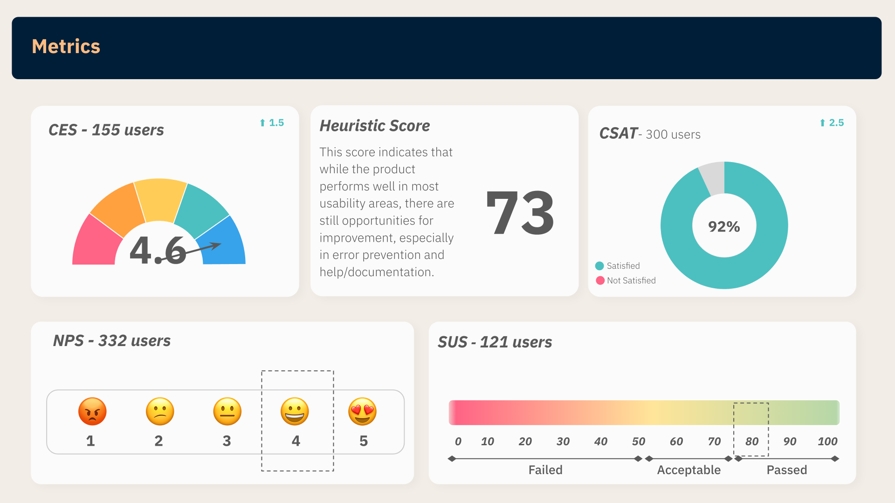
Share of new salons completing setup and creating their first booking.
Time from account creation to the first appointment scheduled.
Salons returning weekly to manage appointments and business operations.